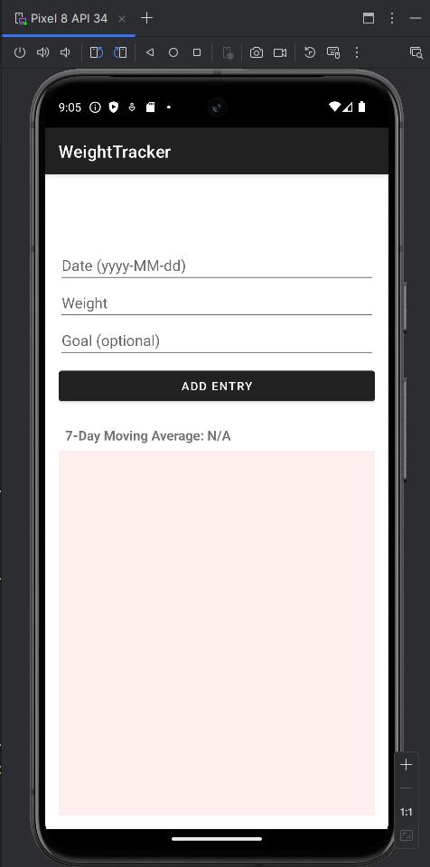
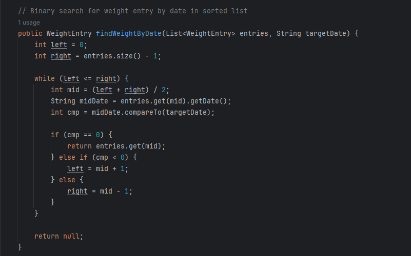
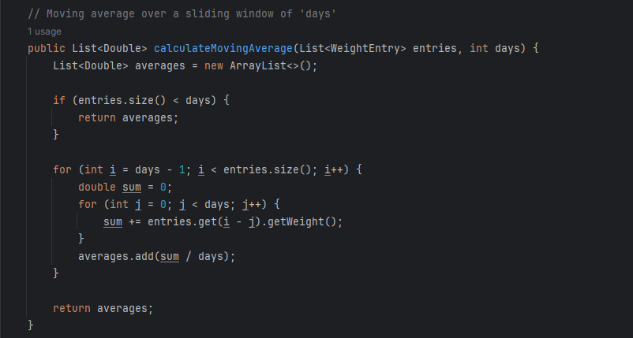
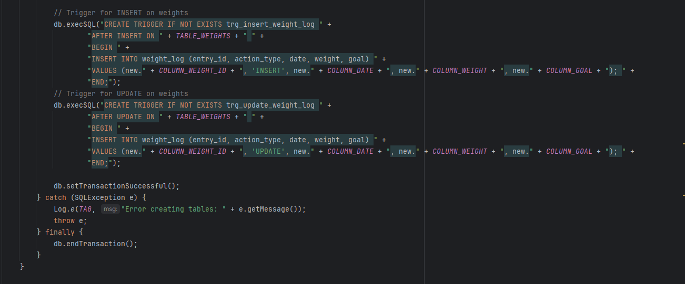

This site showcases my enhanced software artifacts, narratives, and a professional self-assessment as the capstone of my B.S. in Computer Science at SNHU.
My self-assessment reflects on my growth throughout the Computer Science program, my career goals, and the skills I've developed in software engineering, algorithms, databases, teamwork, and security.
As part of the capstone, I recorded a walkthrough of my selected artifacts before enhancement, discussing the existing code and planned improvements.
Artifact: Weight Tracker App from CS-360: Mobile Architecture and Programming
Description: This narrative explains enhancements made in software design and engineering.
For this enhancement, I selected my Android Weight Tracker application due to its clear structure and suitability for showcasing professional software design practices. The app was refactored to follow the MVVM (Model-View-ViewModel) architectural pattern, effectively separating concerns between the UI, business logic, and data layers. I also implemented thorough input validation to prevent crashes, handle user errors gracefully, and improve the overall user experience. These changes strengthened the app’s maintainability and reliability without altering its core features. By improving the app’s structural foundation, I demonstrated industry-standard engineering skills that prioritize clarity, robustness, and extensibility.
Below is a screenshot of the Weight Tracker app’s user interface, demonstrating the clean and simple design used to log and view weight entries.

Artifact: Weight Tracker App from CS-360: Mobile Architecture and Programming
Description: Added improved data structures and a binary search algorithm with a moving average calculation.
This enhancement focused on optimizing the Weight Tracker app’s internal data processing to improve efficiency and analytical capabilities. I implemented a binary search algorithm for date-based weight entry lookups, reducing time complexity from O(n) to O(log n). To complement this, I added a 7-day moving average calculation to smooth out short-term fluctuations and provide a clearer trend of weight progression. These enhancements improve the app’s performance and provide more valuable insights to the user. The work demonstrates algorithmic thinking and performance optimization aligned with industry standards, and benchmark tests confirmed the efficiency gains. All original functionality was preserved while making the app more robust and informative.
Below are code snippets that visually illustrate the key enhancements:
 
Artifact: Weight Tracker App from CS-360: Mobile Architecture and Programming
Description: Added SQL triggers.
This enhancement transforms the original Weight Tracker app into a more robust, data-driven application by integrating a full SQLite database. I implemented a database schema that includes tables for storing user weight entries and created SQL triggers for automatically logging all insert and update actions. These triggers are defined in the onCreate() method of the DatabaseHelper.java class to ensure they are initialized correctly when the app's database is first created. With the addition of persistent data storage, indexed queries, and audit logging via triggers, the app now supports long-term data retention and improved performance. This demonstrates my ability to design structured relational databases and embed them within mobile applications.
Below are the code snippets implementing these SQL trigger enhancements:
